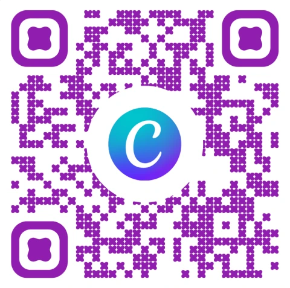

Mujeres de la historia
Toca una carta para girarla y ver la foto real, o pulsa «Ver ficha» para abrirla aquí mismo.
El juego Feminist
Además de todas las actividades de esta web, también puedes descargarte en el móvil FEMINIST, el videojuego.
Es divertido, reivindicativo y feminista, por supuesto. En él te enfrentarás al patriarcado, superarás obstáculos cargados de desigualdad y reflexionarás sobre nuestra lucha.
Pero no te preocupes: cuando te quedes sin fuerzas, las grandes mujeres de la historia te entregarán su energía y sabiduría. Visítalas, descubre sus historias (científicas, artistas y líderes que cambiaron el mundo) y vuelve al camino más fuerte.

¿Estás en el ordenador? Escanea el código con la cámara de tu móvil y descarga el juego.
Actividades
Cada actividad completada te da un sello, que se guarda en tu navegador.
Glosario feminista
Palabras que conviene conocer, explicadas por profesionales. Toca una para ver su significado.
Hecha por una mujer informática
Esta web y este juego los ha creado una mujer, en un sector con clara mayoría masculina. Mireia trabajó años como maestra antes de pasarse a la programación. Al elegir carrera, nunca contempló esta opción —ni ella ni sus amigas—. ¿Por qué crees que ni se le ocurrió?
Y tú, ¿alguna vez te has planteado estudiar informática?